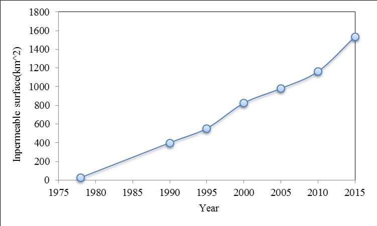

Shandong Peninsula Urban Agglomeration is located in the northeastern part of China, including eight cities on the Shandong Peninsula (i.e. Jinan, Qingdao, Weifang, Zibo, Yantai, Weihai and Dongying). It belongs to the Bohai Economic Rim, and serves as the most dynamic region in that area. Shandong Peninsula includes 13 cities in total, accounting for 11.7% of the nation with 112,700km2 land area and eight cities in Urban Agglomeration cover 74,000km2. With good climate condition and flat terrain, this is the most populated area in China, and maybe one of the regions with most population density in the world. Qingdao and Jinan are duel cores in this area. Based on the goal of building Shandong Peninsula Oceanic Economic Zone, this area is expected to become a nation demonstration zone for oceanic economy, oceanic industrial cluster and oceanic innovation reform pilot area.
Jinan, formerly romanized as Tsinan, is the capital of Shandong province in Eastern China. The area of present-day Jinan has played an important role in the history of the region from the earliest beginnings of civilization and has evolved into a major national administrative, economic, and transportation hub. The city has held sub-provincial administrative status since 1994. Jinan is often called the "Spring City" for its famous 72 artesian springs. Its population was 6.8 million at the 2010 census.[wiki]
From 1978 to 2015, the developed area in Jinan expands from 110km2 to 1500km2.
Qingdao(Tsingdao) is the largest city in Shandong province. Qingdao is a major seaport, naval base, and industrial centre. The world's longest sea bridge, the Jiaozhou Bay Bridge, links the main urban area of Qingdao with Huangdao district, straddling the Jiaozhou Bay sea areas. It is also the site of the Tsingtao Brewery. Administered at the sub-provincial level, Qingdao has jurisdiction over six districts and four county-level cities. As of 2014 Qingdao had a population of 9,046,200 with an urban population of 6,188,100.[wiki]
From 1978 to 2015, the developed area in Qingdao expands from 66km2 to 1816km2.
Weifang is a prefecture-level city in central Shandong province. Established in August 1995, Weifang Binhai Economic & Technological Development Area (BEDA) is a national economic and technological development area approved by the State Council. Its population was 9,086,241 at the 2010 census, of whom 2,659,938 lived in the built-up (or metro) area made up of 4 urban districts (Kuiwen, Weicheng, Hanting and Fangzi) and Changle County largely being urbanized.[wiki]
From 1978 to 2015, the developed area in Weifang expands from 314km2 to 2060km2.
Yantai is a prefecture-level city on the Bohai Strait in Shandong Province. It is the largest fishing seaport in Shandong.Yantai is currently the second largest industrial city in Shandong, next to Qingdao. However, the region's largest industry is agriculture. It is famous throughout China for a particular variety of apple and Laiyang pear, and is home to the country's largest and oldest grape winery. Its population was 6,968,202 during the 2010 census, of whom 2,227,733 lived in the built-up area made up of the 4 urban districts of Zhifu, Muping, Fushan, and Laishan.[wiki]
From 1978 to 2015, the developed area in Yantai expands from 26km2 to 1535km2.
Weihai is a commercial port and major fishing center with some light industries. Due to its close proximity to South Korea, Weihai also has a large Korean business community and receives many Korean tourists. Weihai is also a key production area for peanuts and fruit.Weihai's population was 2,804,800 at the 2010 census. Amongst them, 591,982 live in the built up area (Huancui district). Rongcheng, a county-level city within Weihai, has a built up area with 1,006,795 inhabitants.[wiki]
From 1978 to 2015, the developed area in Weihai expands from 11km2 to 677km2.
Dongying is a prefecture-level city administering 5 county-level divisions, including 3 districts and 2 counties. It is home to the Shengli Oilfield which after the Daqing oilfield, and is the second largest oilfield in China. Dongying is one of the world's leading producers of rubber tires. It has more tire factories than any other city in the world. At the 2010 census, 2,035,338 people resided within its administrative area of 7,923.26 km2 and 998,968 in the built-up area made up of Dongying district and Kenli County largely being urbanized.[wiki]
From 1978 to 2015, the developed area in Dongying expands from 44km2 to 1147km2.
Zibo is a prefecture-level city in central Shandong province.It is an important transportation hub. Zibo governs five districts (Zhangdian, Zichuan, Boshan, Zhoucun and the Linzi) and each of these Chinese districts has a distinct downtown area of its own. The T-shaped city has a total area of 5,938 km2, including the counties of Huantai, Gaoqing, and Yiyuan. Zibo's total population is 4.53 million according to the 2010 census, of which 3,633,239 inhabitants live in the metropolitan area comprising the 5 urban districts, including Huantai county (currently still under construction) which will serve to expand the metro-area to Zouping County situated in the municipality of Binzhou. [wiki]
From 1978 to 2015, the developed area in Zibo expands from 51km2 to 1092km2.
Rizhao is a prefecture-level city in southeastern Shandong province. It is situated on the coastline along the Yellow Sea, and features a major seaport. The name of the city literally means "sunshine". The city is known for its sustainability, and it mandates solar-water heaters in all new buildings. Rizhao city was recognized by the United Nations as one of the most habitable cities in the world in 2009.The city population stands at 2,801,100 as of the 2010 census. Out of those, a little over 865,000 people live in the urban area of Donggang district.[wiki]
From 1978 to 2015, the developed area in Rizhao expands from 50km2 to 608km2.